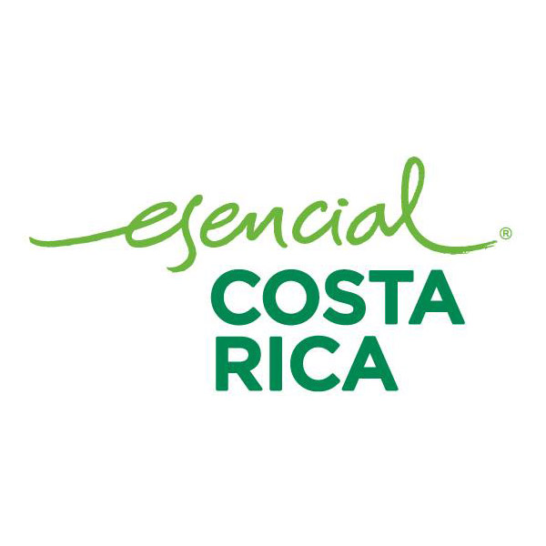
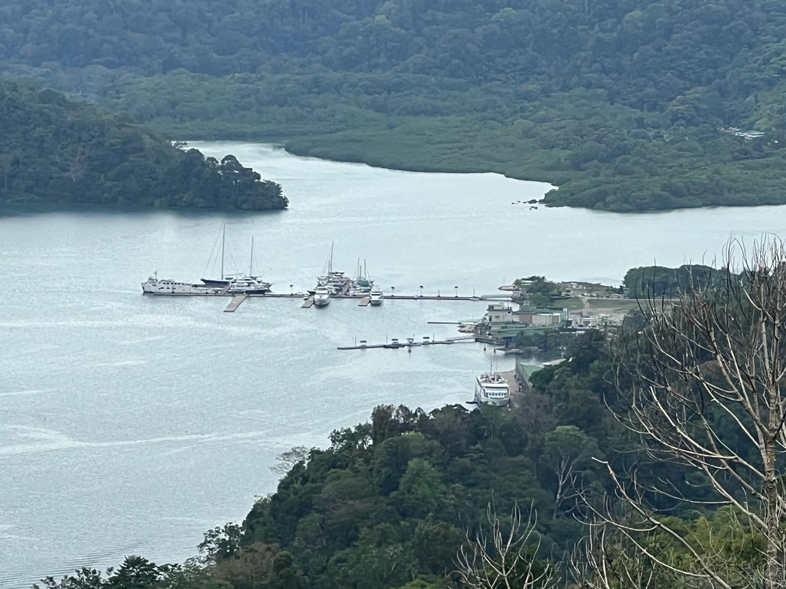
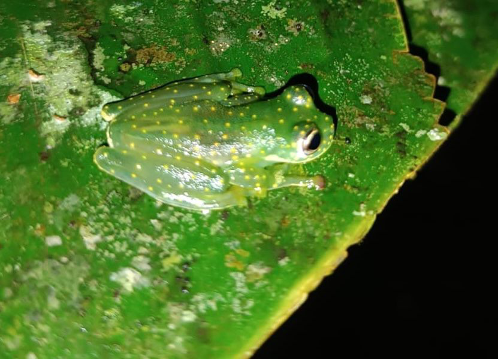
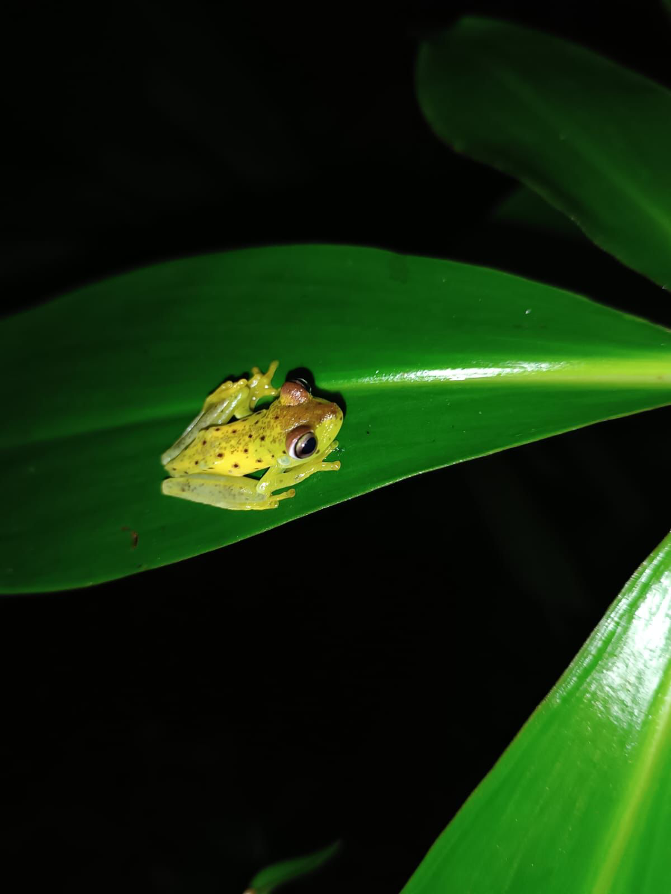
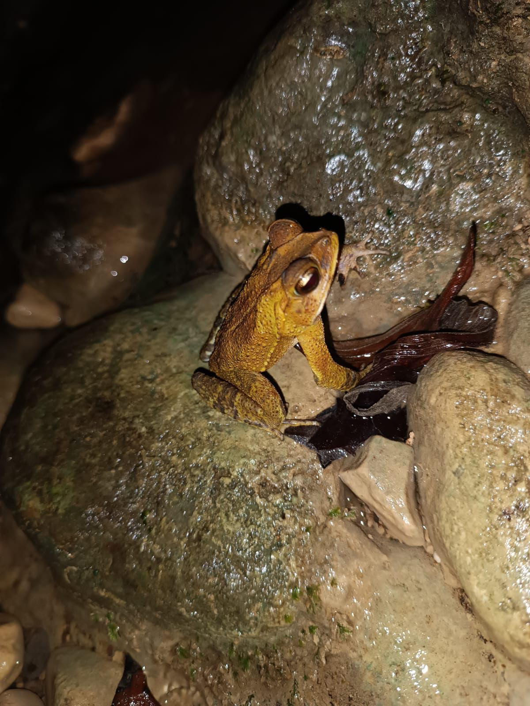
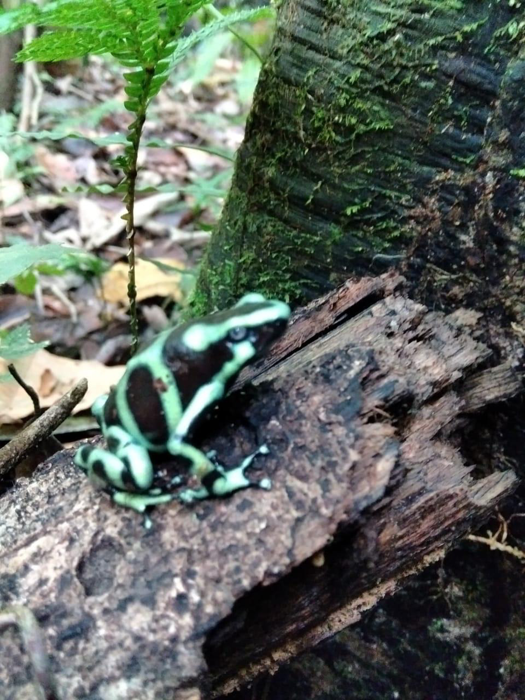
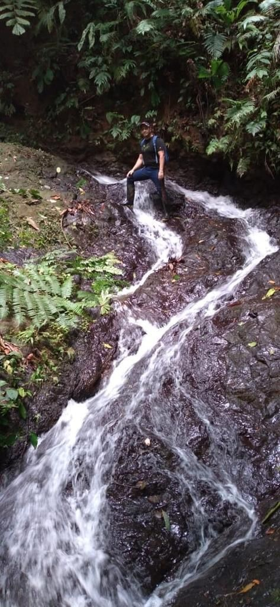

Donde la Inversión encuentra el Corazón de la Biodiversidad
Ubicada en la prestigiosa zona de Golfito, esta finca de 80 hectáreas ofrece una topografía privilegiada que regala vistas sorprendentes de la NATURALEZA del lugar. El acceso está garantizado por dos vías estratégicas: Calle La Torre y el distrito de Guaycará, conectando la paz absoluta con la infraestructura vial de la Carretera Interamericana.

Golfito pertenece a una de las regiones biológicamente más intensas del planeta. Esta propiedad protege un ecosistema de Bosque Tropical Muy Húmedo, caracterizado por una pluviosidad que mantiene la tierra siempre joven y fértil. Es el hogar de gigantes milenarios: maderas preciosas como el Nazareno, Guapinol, Chiricano y Manu Negro, cuya densidad forestal garantiza una huella de carbono negativa y un valor incalculable para el turismo investigativo.
Como parte del paraíso que es COSTA RICA igual cuenta con una gran diversidad de mamíferos como ocelotes, tolomuchos, manigordos, osos perezosos, saínos, cherengas.
De igual manera por la región del país, la gran cantidad de especies de anfibios sorprenderán al comprador, e igual de reptiles endémicos de la zona.
Este paraje igual no dejará de lado la apreciación de aves como lapas, loras, trogon y una gran diversidad de insectos como las mariposas Morpho, Heraclides, Caligos entre otras.




Costa Rica es referente mundial en sostenibilidad. Esta propiedad encarna los 5 valores de la marca país: **Excelencia, Sostenibilidad, Innovación, Progreso Social y Origen Costarricense**. Invertir aquí no es solo adquirir tierra, es integrarse a un modelo de negocio que respeta la normativa ambiental y eleva el prestigio del inversionista ante el mundo.

La orografía de Golfito genera una red hídrica única. Dentro de la propiedad, imponentes cascadas de más de 20 metros crean un microclima de frescura y paz. Los ríos de agua cristalina albergan vida silvestre como camarones y peces de agua dulce, ofreciendo el escenario perfecto para el rapel de alto nivel o pozas de nado natural. Este recurso garantiza la viabilidad de cualquier proyecto ecoturístico o residencial de lujo.